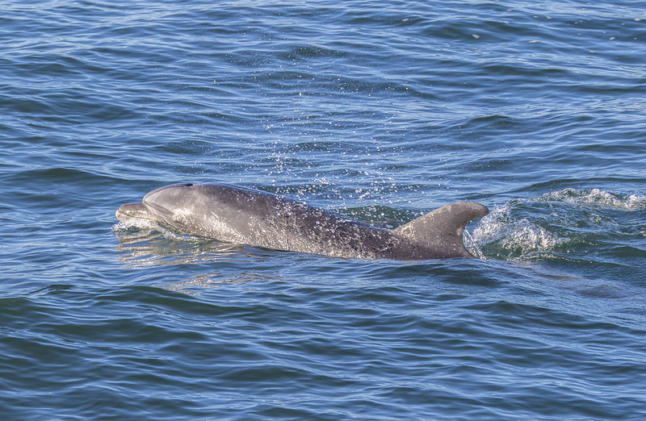
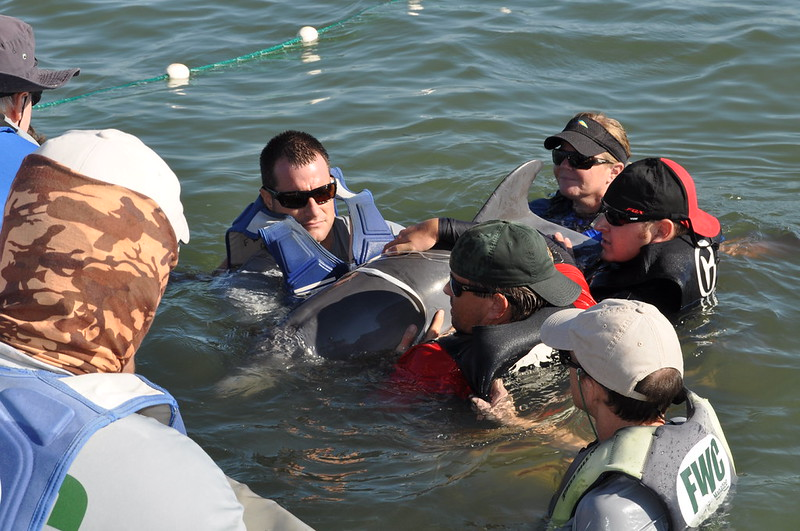
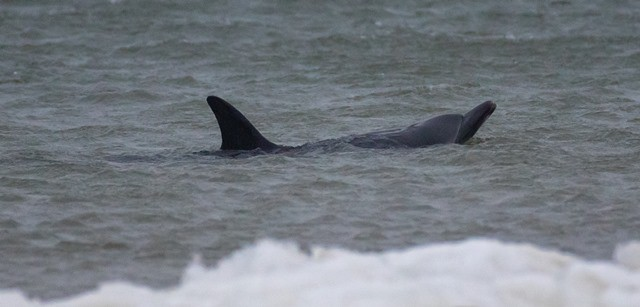
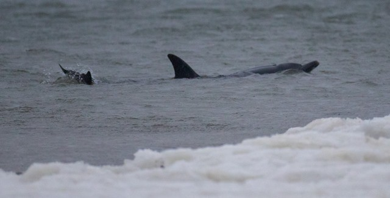
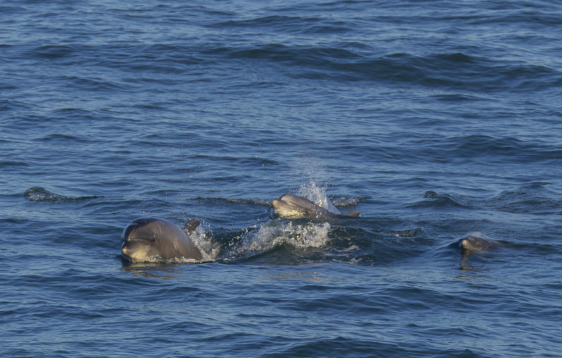

Add to your home screen for instant live satellite access.
App link copied to clipboard!
Tap to Expand Dashboard
Bottlenose Dolphin
Length: 2.4m • Mass:
210kg • Tag:
SAT-9821
Temp
18.8°C
Swell
1.4 m
Speed
14.2 km/h
Depth
-8.4m
Cape Peninsula Basin
Blue is a resilient Bottlenose dolphin rescued during an ocean stranding event and successfully rehabilitated before being tagged and re-released into open waters. Fitted with an ARGOS satellite telemetry unit (Tag SAT-9821), Blue now traverses deep coastal shelves, riding high wave energy and hunting schooling fish along bay channels. Her movement data directly supports marine conservation tracking.
Blue
Surfacing

Cruising

Pod
Blue's Past Sightings & Rescue

Surface

Rescue

Portrait
False Bay Central BasinBay Stay: Day 2 of 3 • GPS Ping Verified
1h ago
Fish Hoek Outer TrenchBay Stay: Day 2 of 3 • Coastal Foraging
2h ago
Simon's Town Deep RidgeBay Stay: Day 2 of 3 • Deep Dive (-14m)
3h ago
Cape Point Entrance ChannelBay Stay: Day 1 of 3 • Transit Arrival
4h ago
DYK:
Blue's satellite tag transmits ultra-short burst telemetry to ARGOS satellites during surface breaths.